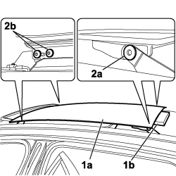

7030B18 SLIDING ROOF GLASS PANEL - R+R
- Path
- Procedures > 70 FITTINGS > 7030 SUN ROOF/GLASS PANEL > 7030B SLIDING ROOF > 7030B18 SLIDING ROOF GLASS PANEL - R+R
- Kind
- repair procedure (removal / refitting; the operation number is the code)
- Applies to
- all engines; all production periods
- Interactive page
- https://sloeber94.github.io/elrnDB-fCrm/en/#/194000974
Applies to: all engines; all production periods
 Removing
Removing
 Refitting
Refitting1. Place the sun roof (1a) preselector in the second opening position and place a soft spacer (1b) for supporting the glass and do not scratch it.
2. Undo the bolts (2a) on the rear part of the sun roof and the bolts (2b) on the front part and remove the transparent section.

Applies to: all engines; all production periods
Refitting
Removing- Position the transparent section and tighten the bolts to the front section of the sun roof.
- Tighten the bolts to the rear section of the sun roof.
- Check that the sun roof is working properly.
Topics that link to this page (10)
- Q005 SUN ROOF STICKING
- Q006 SUN ROOF DOES NOT STOP IN END OF TRAVEL POSITION
- S076 SUN ROOF NOISY / WITH ROOF CLOSED
- 7030B12 SLIDING ROOF (ASSEMBLY) - R+R
- 7030B29 ELECTRICALLY OPERATED SUN ROOF BLIND - R.R.
- 7030B50 SUN ROOF SLIDING GUIDE (ONE), LH OR RH - R.R
- 7030B51 SLIDING ROOF CENTRAL ANTI-WIND NOISE GASKET - R R
- 7030B53 SLIDING ROOF GLASS SUPPORT ROD (ONE) RH OR LH - R R
- 7030B90 SLIDING ROOF FRAME - R R
- 7030B91 SLIDING ROOF ASSEMBLY CENTRAL CROSS MEMBER - R R